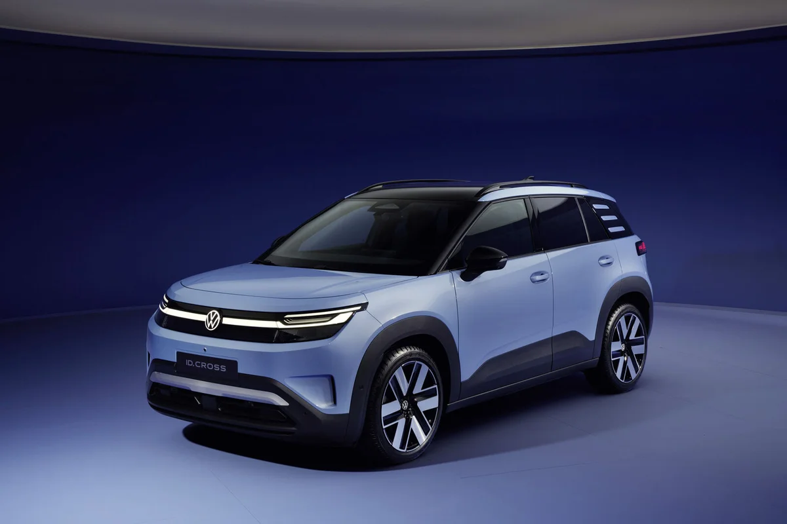
▲ 폭스바겐 ID. Cross 전면 3/4(7월 양산형 공개 시 뉴스룸 배포 사진). 색상·트림·배터리 버전은 사진만으로 단정하지 않는다 사진=폭스바겐 뉴스룸 (사용자 책임 하 사용)
"2만 7,995유로짜리 전기 SUV가 정말 나온 걸까?" 폭스바겐이 ID. Cross에 작은 배터리 버전을 추가하면서 독일 시작가를 낮췄다. 폭스바겐 뉴스룸의 2026년 10월 19일자 보도자료로 확인되는 부분과 언론 보도에만 나오는 부분을 나눠 정리한다. (2026-10-21 기준)
공식 보도자료에서 확인되는 핵심은 세 가지다. 37kWh(순용량) 배터리 버전의 사전 판매가 시작됐고, 85kW(116PS) 트렌드(Trend) 트림이 독일 27,995유로부터이며, WLTP 주행거리는 최대 324km라는 것이다. 한국 출시 여부는 이번 조사에서 공식 확인되지 않았다.
1. 공식 발표: 37kWh 버전, 27,995유로부터 사전 판매
폭스바겐 뉴스룸은 2026년 10월 19일 볼프스부르크발 보도자료에서 ID. Cross를 37kWh 배터리로 주문할 수 있게 됐다고 밝혔다. 7월 중순 세계 최초 공개 때 나온 52kWh 버전에 더해 작은 배터리를 추가한 것이다. 출력은 85kW(116PS)와 99kW(135PS) 두 가지이고 최고속도는 160km/h다.
트림은 트렌드·라이프·스타일 세 가지다. 보도자료가 가격을 직접 밝힌 것은 85kW 트렌드의 독일 27,995유로부터뿐이며 나머지 트림 가격은 이 자료에 없다. 인도 시기도 보도자료에는 적혀 있지 않고 사전 판매가 시작된다는 표현만 있다.
📍 제목의 "27,995유로"가 뜻하는 것
독일 소비자 권장가 기준 85kW 트렌드(37kWh) 트림의 시작가다. 구매 보조금 적용 전 가격이며 등록·인도 비용 등은 별도다. 폭스바겐 독일 모델 페이지도 "27,995유로부터"로 표기하고 부가세 포함 권장 소비자가격에 등록·인도 비용은 별도라고 안내한다.
공식 자료로 직접 확인할 수 있다.
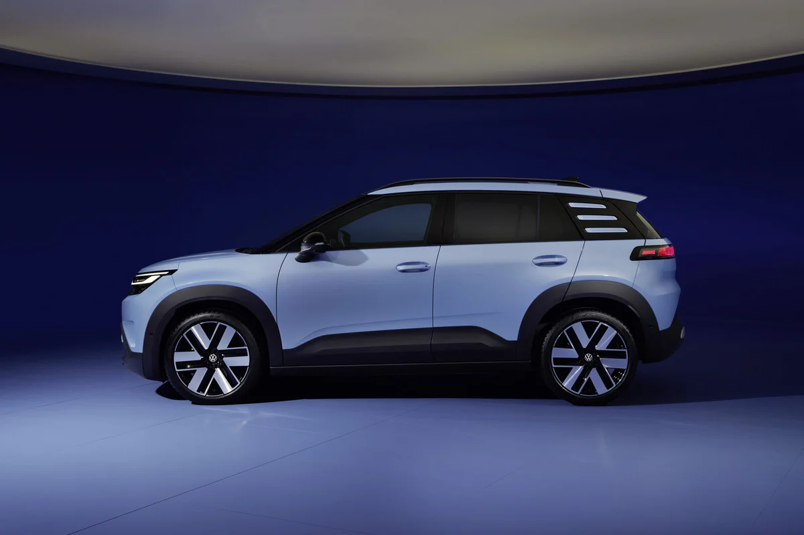
▲ ID. Cross 측면. 휠베이스와 루프라인이 드러난다(색상·트림 단정 안 함) 사진=폭스바겐 뉴스룸 (사용자 책임 하 사용)
2. 37kWh와 52kWh, 무엇이 다른가
두 배터리 버전의 공식·보도 수치를 나란히 놓으면 이렇다. 52kWh 수치는 폭스바겐 독일 모델 페이지, 37kWh 수치는 뉴스룸 보도자료에서 확인했고 가격은 일부가 보도 기준이다.
| 항목 | 37kWh | 52kWh |
|---|---|---|
| 출시 시점 | 2026년 10월 19일 사전 판매 시작(공식) | 7월 공개 후 판매 중 |
| 순용량 | 37kWh(공식) | 52kWh(공식 모델 페이지, 라이프 기준) |
| 출력 | 85kW(116PS)·99kW(135PS)(공식) | 155kW(보도) |
| WLTP 최대 | 324km(공식, 어느 사양인지는 미명시) | 427km(공식 모델 페이지) |
| DC 급속충전 | 최대 90kW, 10→80% 약 23분(공식, 7월 일렉트리브 보도는 27분) | 최대 105kW, 10→80% 약 24분(공식 모델 페이지) |
| 시작 가격 | 트렌드 27,995유로(공식) | 라이프 36,525유로(보도) |
같은 표에서 주의할 점이 있다. 324km는 "최대"이므로 모든 사양에 해당하지 않는다. 독일 매체 하이제(heise)가 인용한 오스트리아 가격표에는 트렌드 85kW가 222~324km, 라이프 99kW가 213~312km, 스타일 99kW가 213~311km로 적혀 있다는 보도가 있다.
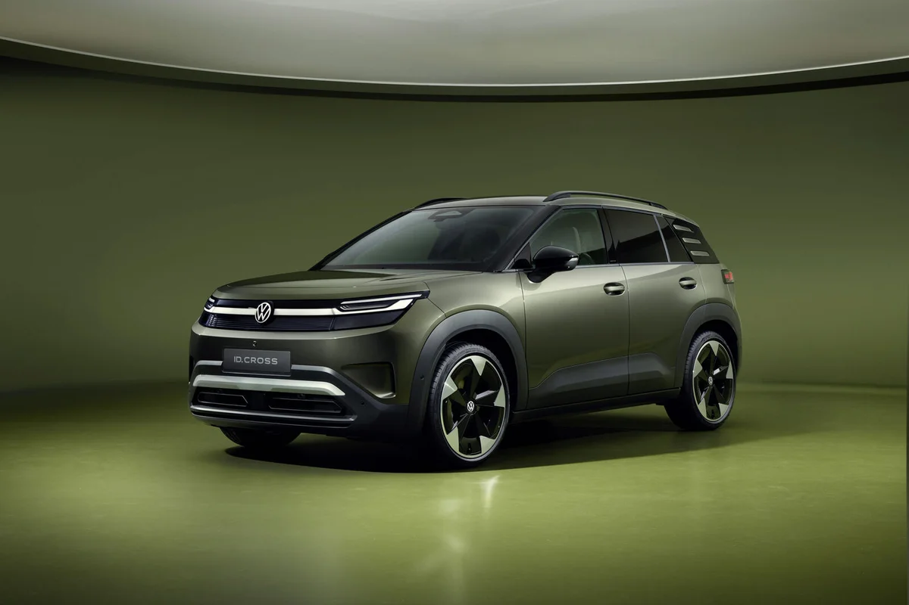
▲ 올리브 그린 계열 도장의 ID. Cross 전면 3/4. 일부 사진의 도장·휠은 트림·옵션에 따라 다를 수 있다 사진=폭스바겐 뉴스룸 (사용자 책임 하 사용)
3. 트림별 독일 가격(보도 기준)
하이제 보도 기준 독일 가격표는 아래와 같다. 트렌드 이외의 가격은 폭스바겐 보도자료가 아닌 언론 보도이므로 주문 전 폭스바겐 독일 구성기(콘피규레이터)로 재확인해야 한다.
| 배터리·출력 | 트렌드 | 라이프 | 스타일 |
|---|---|---|---|
| 37kWh · 85kW | 27,995 | - | - |
| 37kWh · 99kW | - | 31,925 | 34,510 |
| 52kWh · 155kW | - | 36,525 | 39,110 |
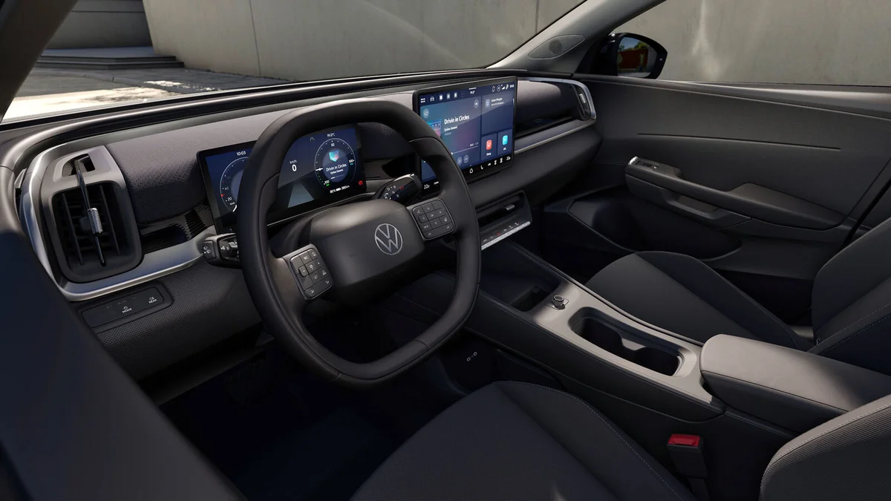
▲ ID. Cross 실내. 운전석 앞 계기판과 중앙 화면이 보인다(보도자료 사진, 트림은 단정하지 않음) 사진=폭스바겐 뉴스룸 (사용자 책임 하 사용)
구매 지원금도 보도에 따라 다르다. 일렉트리브(electrive) 7월 보도는 라이프에 2,500유로, 스타일에 3,500유로의 폭스바겐 구매 장려금이 적용돼 34,025유로와 35,610유로가 된다고 썼다. 하이제 표는 "ID. 구매 장려금 2026년 말까지"를 적었지만 트림별 대응은 불분명해 확인하지 못했다.
카프리즘 시선
제목의 27,995유로는 가장 짧은 사양(85kW 트렌드)의 시작가다. 라이프부터는 31,925유로로 시작해 3,930유로(카프리즘 계산)가 더 붙는다. 같은 라이프 트림에서 52kWh로 올리면 36,525유로로 4,600유로(카프리즘 계산)를 더 내고, 보도된 최대 주행거리는 312km에서 427km로 늘어난다.
그래서 "2만 유로대 전기 SUV"라는 표현은 입문 구성에 한정된 말이다. 가격을 어느 사양에 맞추느냐에 따라 체감 격차가 크게 달라지므로, 위 표의 두 줄은 같은 트림끼리 놓고 읽어야 한다. 이 해석은 본문에 인용한 독일 보도 가격과 주행거리 수치만 근거로 한다.
4. ID. Polo와의 관계: 같은 플랫폼, 한 체급 위
폭스바겐 뉴스룸 보도자료는 ID. Cross와 ID. Polo의 기술적 관계를 설명하지 않는다. 두 차의 관계는 일렉트리브 보도에서 가져왔다.
보도에 따르면 두 차는 개량된 MEB+ 플랫폼을 쓰는 형제 모델이고, Cross는 Polo보다 길이가 약 10cm, 높이가 약 5cm 더 큰 SUV(전장 4.15m)로 자리잡는다. ID. Polo 시작가는 24,995유로, Cross의 발표 시작가는 3,000유로 높다.
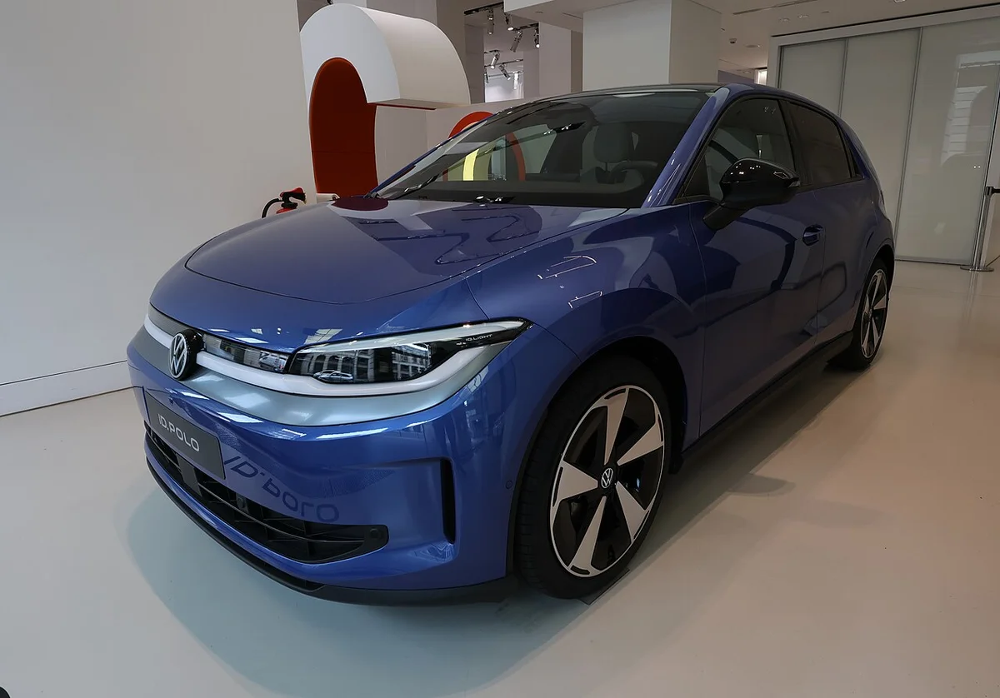
▲ 폭스바겐 ID. Polo 전시차(2026-08-19 촬영) 전측면. Cross의 한 체급 아래 모델이다 ⓒ Brewster239, Wikimedia Commons (CC BY-SA 4.0)
같은 보도에서 37kWh 배터리를 쓰는 ID. Polo와 쿠프라 라발(Raval)의 10→80% 충전 시간은 23분인데, ID. Cross 37kWh는 일렉트리브 7월 보도에서 27분(최대 90kW, LFP 배터리 기준)으로 인용됐고 일렉트리브도 이 차이의 이유가 불분명하다고 썼다. 10월 19일 폭스바겐 보도자료는 약 23분(최대 90kW)으로 적었고, 하이제는 같은 23분을 "이상적인 조건에서"라는 단서와 함께 약 25.9kWh 충전(평균 약 68kW)으로 풀이했다. 7월 27분이 사전 추정치였는지 조건이 달랐는지는 공개 자료로 확인하지 못했으므로, 공식 최신값은 23분이되 실제 충전은 온도·충전기 조건에 따라 달라질 수 있다고 보는 편이 안전하다.
ID. Polo용 모터 이야기는 폭스바겐 미션 에피션시 콘셉트 기사에서 짧게 언급된 정도이고, ID. Polo 전용 기사는 아직 없다.
5. 경쟁 모델과 비교하면
하이제는 같은 가격대의 경쟁 모델을 함께 적었다. 같은 MEB+ 계열인 스코다 에픽(Epiq)이 25,900유로부터, 리프모터 B03X가 25,400유로부터, 르노 4(40kWh)가 27,690유로부터, 오펠 모카(51kWh)가 37,240유로라는 보도다. ID. Cross 트렌드 27,995유로는 이들 사이에서 중간쯤이다.
다만 하이제는 기사 시점에 공식 소비 전력량이 공개되지 않았다며 자체 추정치로 100km당 20~25kWh를 적고, 이 경우 실주행거리가 약 148~185km일 수 있다고 썼다. 다만 폭스바겐 뉴스룸 보도자료 각주에는 85kW 트렌드의 복합 전력 소비량이 100km당 14.7~13.8kWh로 표기돼 있다. 하이제 추정치는 독립 측정이 아니므로 참고만 하는 편이 좋다. 또한 99kW 사양은 견인 용량이 제동 시 최대 1,200kg에서 750kg으로 줄어든다는 보도가 있다.
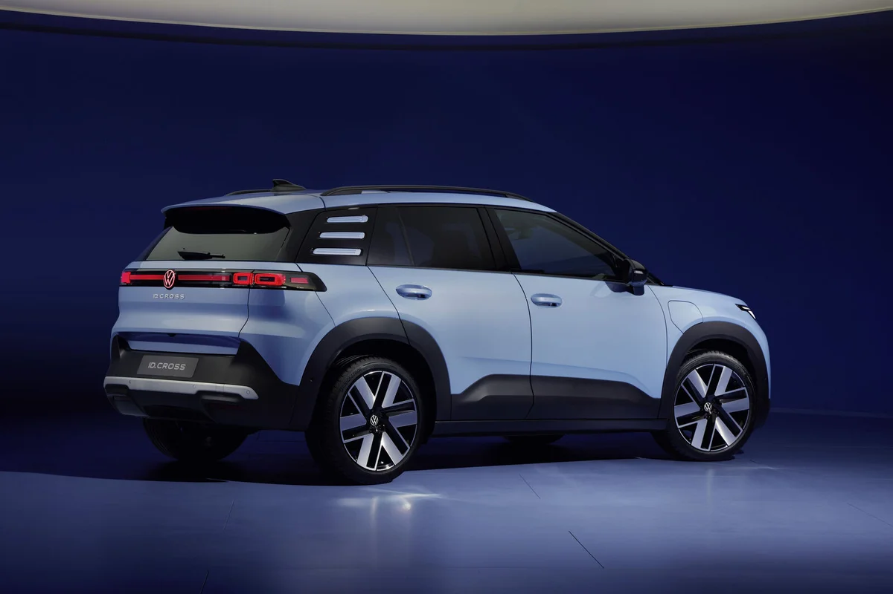
▲ ID. Cross 후면 3/4. 가로로 이어진 테일램프가 보인다 사진=폭스바겐 뉴스룸 (사용자 책임 하 사용)
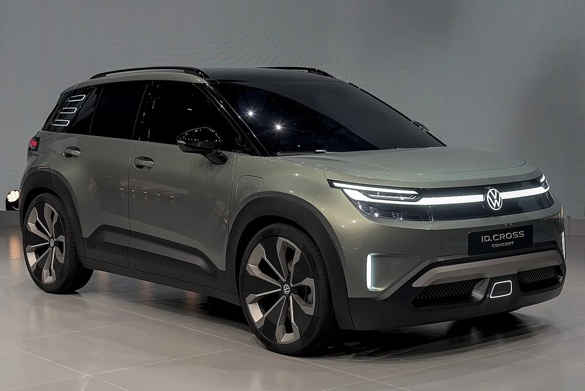
▲ 2025년 IAA에 전시된 ID. Cross 콘셉트카(양산형 아님). 양산형과 세부 디자인이 다를 수 있다 ⓒ Alexander-93, Wikimedia Commons (CC BY-SA 4.0)
6. 한국 출시 가능성: 공식 확인 불가
이번 조사 범위의 폭스바겐 보도자료와 독일 모델 페이지, 보도 어디에서도 ID. Cross의 한국 출시 계획은 확인하지 못했다. 따라서 가격·시기를 추정하지 않는다. 한국 사양과 가격은 폭스바겐코리아 공식 발표를 기다려야 한다.
참고로 폭스바겐의 국내 전기차 출시 흐름은 ID.4 GTX 국내 출시 기사와 ID.4 명칭 변경 기사에서 볼 수 있다. 국내 보조금 환경은 2027년 전기차 보조금 기준 기사를 참고하면 된다.
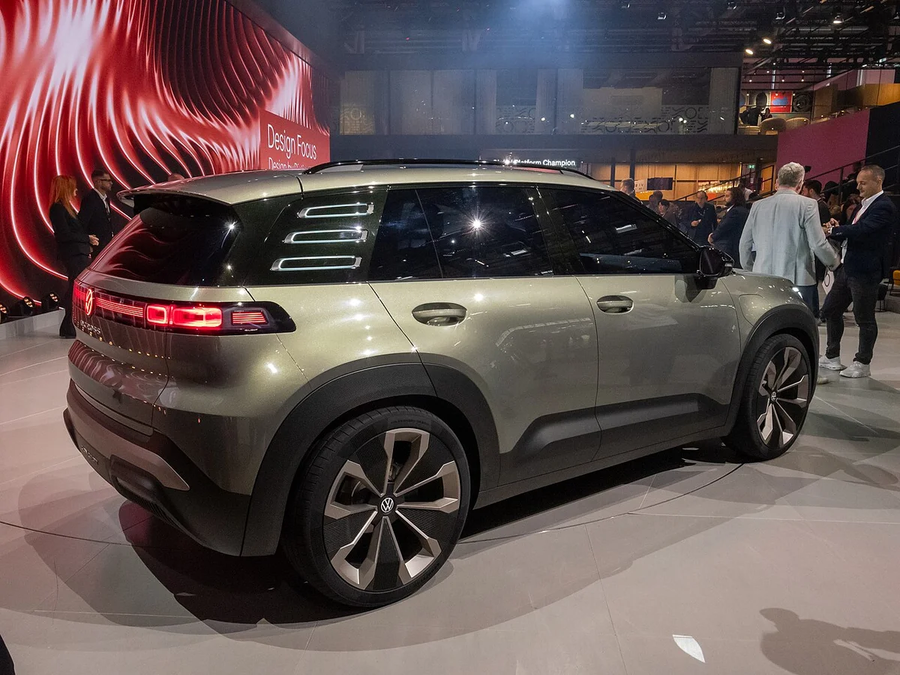
▲ IAA 2025의 ID. Cross 콘셉트 후측면(양산형 아님) ⓒ Matti Blume, Wikimedia Commons (CC BY-SA 4.0)
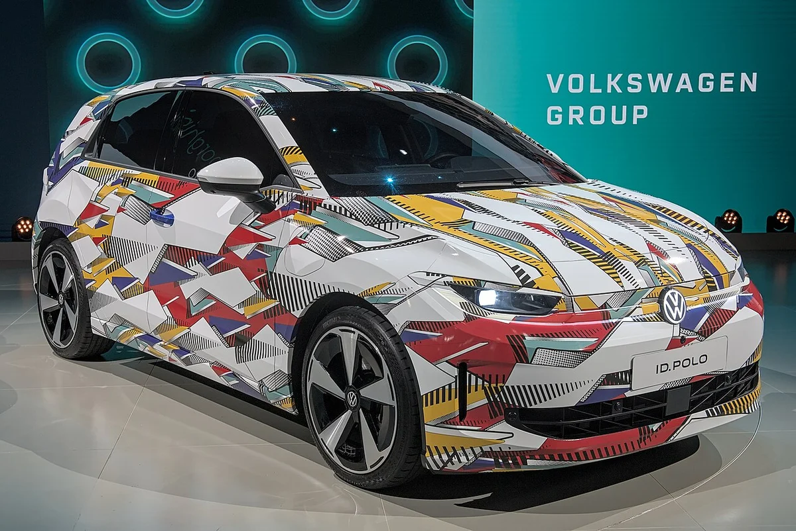
▲ IAA 2025의 위장 래핑 ID. Polo 전시차(양산형 아님) ⓒ Alexander-93, Wikimedia Commons (CC BY-SA 4.0)
7. 아쉬운 점·주의할 점: 최대 주행거리, 견인 용량, 보도 기준 가격
27,995유로짜리 입문 구성의 한계는 주행거리가 사양별로 달라지고, 99kW 사양은 견인 용량이 줄며, 가격 대부분이 아직 보도 기준이라는 점이다. 공식 자료로 확인되는 범위와 그렇지 않은 범위를 나눠 보면 다음과 같다.
- 324km는 최대치: 하이제가 인용한 오스트리아 가격표에는 트렌드 85kW가 222~324km, 라이프 99kW가 213~312km로 적혀 있다
- 견인 용량 감소: 99kW 사양은 제동 시 견인 용량이 최대 1,200kg에서 750kg으로 줄어든다는 보도가 있다
- 실주행거리 논란: 하이제는 자체 추정으로 실주행거리가 약 148~185km일 수 있다고 썼으나, 폭스바겐 보도자료 각주의 복합 전력 소비량(85kW 트렌드)과는 다르다. 독립 측정이 아니라 참고용이다
- 충전 시간 수치 차이: 10→80%가 공식 약 23분이지만 7월 일렉트리브 보도에는 27분으로 나와 있다
- 확인하지 못한 것: 라이프·스타일 가격은 보도 기준이고, 인도 시기와 한국 출시는 공식 확인되지 않았다
8. 구매·관심 전 확인할 것
✅ ID. Cross 독일 가격, 이것만은 확인하세요
· 27,995유로는 85kW 트렌드(37kWh) 시작가이고 지원금·등록비 전 기준
· 324km는 WLTP "최대"이며 사양별 값은 다를 수 있음
· 라이프·스타일 가격은 보도 기준이므로 구성기에서 재확인
· 인도 시기는 공식 보도자료에 없음
· 한국 출시는 공식 확인되지 않음
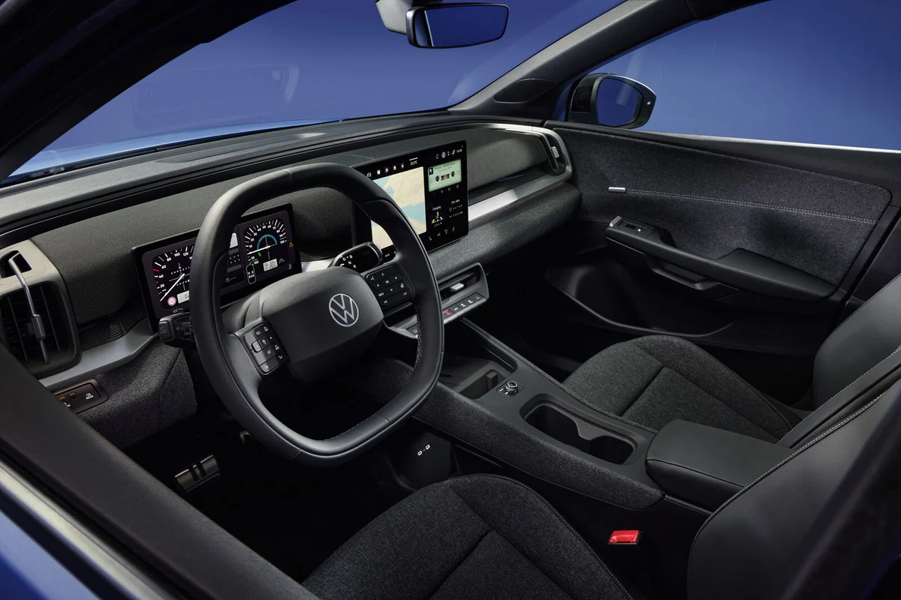
▲ ID. Cross 실내(양산형 공개 사진). 사양에 따라 소재·화면 구성이 다를 수 있다 사진=폭스바겐 뉴스룸 (사용자 책임 하 사용)
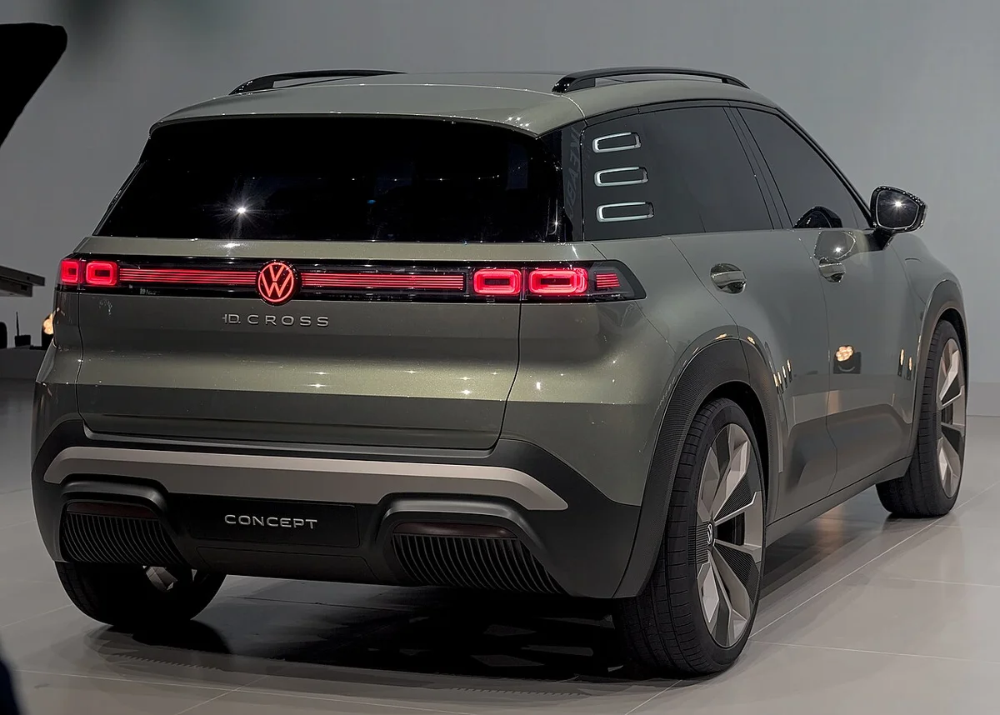
▲ ID. Cross 콘셉트 후면(IAA 2025, 양산형 아님) ⓒ Alexander-93, Wikimedia Commons (CC BY-SA 4.0)
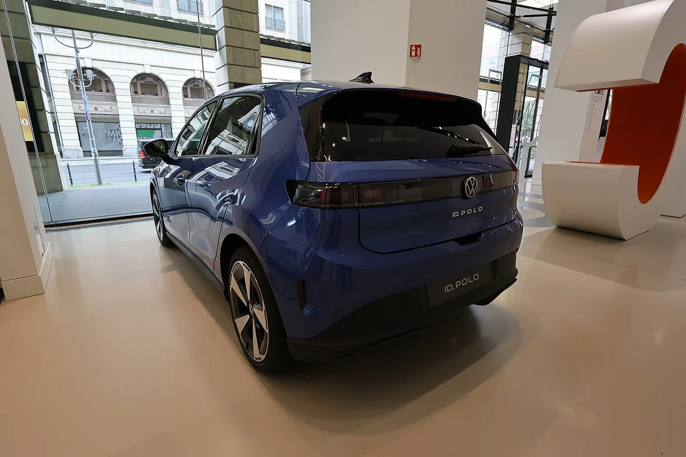
▲ ID. Polo 전시차 후면(2026-08-19 촬영) ⓒ Brewster239, Wikimedia Commons (CC BY-SA 4.0)
9. 요약
폭스바겐은 2026년 10월 19일 ID. Cross 37kWh 버전 사전 판매를 시작했고, 85kW 트렌드가 독일 27,995유로부터다. 출력은 85kW·99kW, WLTP 최대 324km, 최대 90kW 급속충전(10→80% 약 23분)이 공식 발표 내용이다.
라이프·스타일 가격, 지원금, ID. Polo와의 관계, 경쟁 모델 가격은 언론 보도 기준이며 인도 시기와 한국 출시는 공식 확인하지 못했다. 실제 구매 판단은 폭스바겐 독일 구성기와 공식 가격표로 재확인하길 권한다.